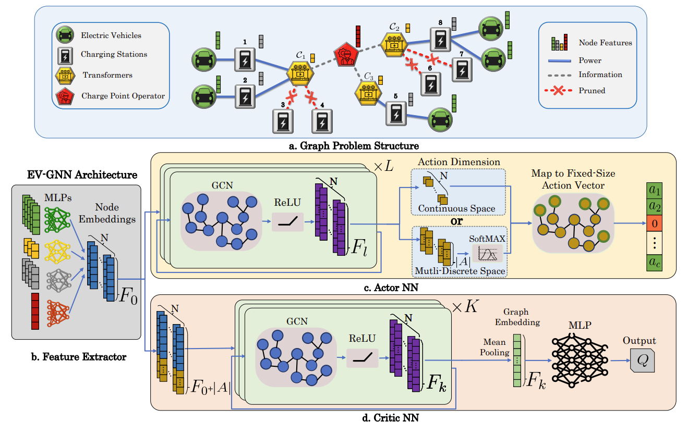
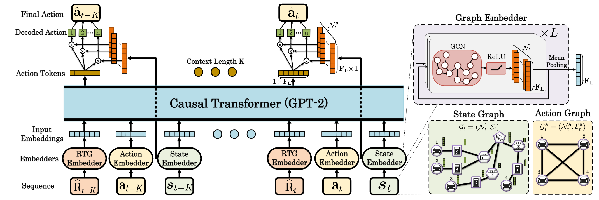
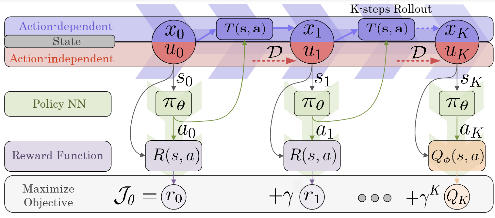
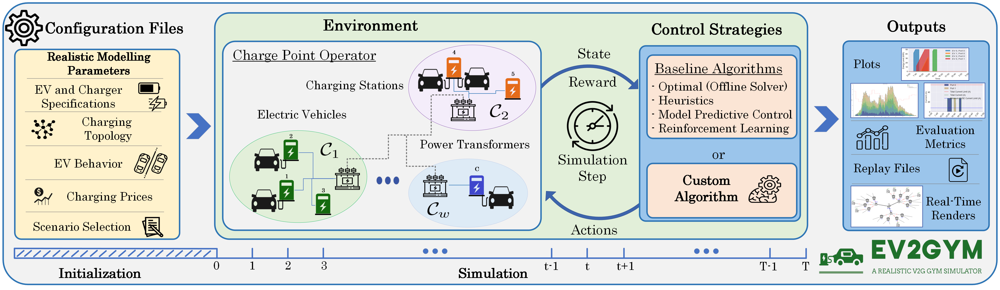
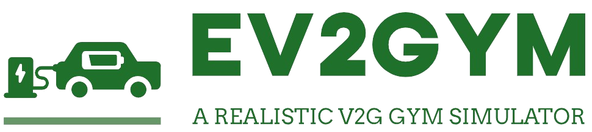
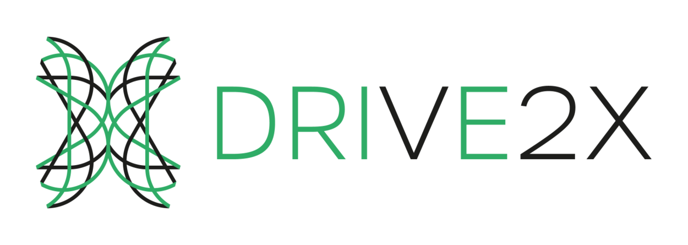

Stavros Orfanoudakis
Research Fellow · Power Systems Laboratory, ETH Zürich
I am a Research Fellow at the Power Systems Laboratory, ETH Zürich, working on reinforcement learning, graph neural networks, large language models, and physics-informed machine learning for power and energy systems, with a focus on scalable and trustworthy AI for real-world operation.
Research interests
- Reinforcement Learning
- Physics-Informed ML
- LLMs & GNNs for Power Systems
- Energy Transition & Smart Grids
- Multi-Agent Systems
PhD · Electrical Engineering, Mathematics & Computer Science
MSc · Electrical & Computer Engineering
BSc & MEng · Electrical & Computer Engineering
“I envision intelligent AI systems as a key force in the energy transition: autonomous, resilient, and trustworthy in real-world operation.”
News
Recent Milestones
FEB 2026
Started as Research Fellow at the Power Systems Laboratory, ETH Zürich, working on LLMs and physics-informed ML for power systems.
JAN 2026
Awarded Best PowerWeb Paper Award 2025 and nominated for Best Energy Paper for our Graph-RL EV coordination work.
NOV 2025
Visiting Researcher at MIT Center for Transportation & Logistics; co-organized an industry event on Agentic AI in supply chains.
SEP 2025
Granted the NCCR Automation Fellowship for "Physics-Informed LLMs for Sequential Decision-Making in Power Systems".
JUL 2025
"Scalable RL for Large-Scale EV Coordination Using GNNs" named Editor's Choice 2025 at Nature Communications Engineering.
JUN 2025
Invited talk at the Linux Foundation Energy Summit Europe, Aachen.
FEB 2025
Featured in a TU Delft user story: "Simulating a Thousand Charging Stations on DelftBlue".
APR 2023
Started my PhD at TU Delft, Intelligent Electrical Power Grids group.
Selected publications
Research Highlights

"A Graph Neural Network-Enhanced Decision Transformer for Efficient Optimization in Dynamic Smart Charging Environments"

"Physics-Informed Reinforcement Learning for Large-Scale EV Smart Charging Considering Distribution Network Voltage Constraints"

"EV2Gym: A Flexible V2G Simulator for EV Smart Charging Research and Benchmarking"
Archive
Publications
Journal articles, peer-reviewed conference papers, and preprints under review.
Under review
Preprints · 6
2026
"Learning to Route Electric Trucks Under Operational Uncertainty"
"Topology-Aware Graph Reinforcement Learning for Energy Storage Systems Optimal Dispatch in Distribution Networks"
"Flow Matching Policy with Entropy Regularization"
"SAVGO: Learning State–Action Value Geometry with Cosine Similarity for Continuous Control"
2025
"Physics-Informed Reinforcement Learning for Large-Scale EV Smart Charging Considering Distribution Network Voltage Constraints"
"Optimizing Electric Vehicles Charging Using Large Language Models and Graph Neural Networks"
Journal publications
Peer-reviewed · 9
2026
"A Graph Neural Network-Enhanced Decision Transformer for Efficient Optimization in Dynamic Smart Charging Environments"
"Physics-Informed Neural Network with Adaptive Activation for Power Flow"
"Open-Source Algorithms for Maximizing V2G Flexibility Based on Model Predictive Control"
2025
"High-Temporal-Resolution Dataset of Uni-, Bidirectional, and Dynamic Electric Vehicle Charging Profiles"
"Scalable Reinforcement Learning for Large-Scale Coordination of Electric Vehicles Using Graph Neural Networks"
2024
"EV2Gym: A Flexible V2G Simulator for EV Smart Charging Research and Benchmarking"
"A Comprehensive Analysis of Agent Factorization and Learning Algorithms in Multiagent Systems"
"PowerFlowNet: Power Flow Approximation Using Message Passing Graph Neural Networks"
2022
"Novel Meta-Learning Techniques for the Multiclass Image Classification Problem"
Conference publications
Peer-reviewed · 9
2026
"Can AI Accelerate EV Dispatch?"
"Safe Reinforcement Learning for V2G-Enabled Electric Vehicle Aggregators"
2024
"A Dynamic Prediction Tool for Vehicle-to-Grid Operation and Planning"
"Energy Storage Systems Planning in the Electric Distribution System Considering the Grow of PV Penetration"
"Reinforcement Learning for Optimized EV Charging Through Power Setpoint Tracking"
2023
"A Novel Aggregation Framework for the Efficient Integration of Distributed Energy Resources in the Smart Grid"
2022
"The Performance Impact of Combining Agent Factorization with Different Learning Algorithms for Multiagent Coordination"
"Intelligent Robotic System for Urban Waste Recycling"
2021
"Aiming for Half Gets You to the Top: Winning PowerTAC 2020"
Open source & collaborations
Projects
A curated portfolio of open-source research software and collaborative initiatives in intelligent energy systems, reinforcement learning, and EV charging optimization.

EV2Gym
Research-grade Python environment for large-scale EV smart charging and V2G simulation. Provides an OpenAI Gym interface for reproducible reinforcement-learning experiments in Vehicle-to-Grid settings.
EV-GNN
Python package for graph-based reinforcement learning in EV charging coordination. Built to support scalable experiments and reproduce the Nature Communications Engineering study.
DT4EVs
Python package for offline EV charging optimization using decision transformers, designed for data-driven scheduling and benchmark evaluation in dynamic charging environments.
PowerFlowNet
Python package for graph-neural-network-based power-flow approximation, enabling fast surrogate modeling for grid analysis and optimization workflows.

DRIVE2X
EU Horizon consortium advancing vehicle electrification through bidirectional smart charging. My TU Delft PhD work contributed large-scale coordination methods for real-world deployment scenarios.
Supervision & teaching
Teaching
Lectures, tutorials, and co-supervision of MSc theses across ETH Zürich, MIT, TU Delft, and the Technical University of Crete.
Lectures & tutorials
Courses Taught
Introduction to Deep Reinforcement Learning
Guest Lecturer · AI Minor Program
Invited lecture covering policy/value methods, exploration strategies, and practical implementation guidance.
Tutorial on Reinforcement Learning
Guest Lecturer · InnoCyPES Colloquium
Hands-on tutorial session focused on modeling sequential decision-making problems in energy systems.
Artificial Intelligence
Teaching Assistant · Tutorials & Project Supervision
Supported tutorials, graded coursework, and supervised student projects in core AI topics.
Multiagent Systems
Teaching Assistant · Tutorials & Project Supervision
Delivered tutorial support and project mentoring on coordination, planning, and learning in multiagent settings.
MSc thesis supervision
Students
Bibi van den Berg
Quantifying the Economic V2G Benefits: Cost-Optimal V2G Integration in Residential Settings
Ruben Eland
Improving EV Aggregators' Workplace Charging: A Safe Reinforcement Learning Approach
Yunus Emre Yılmaz
EV Charging Strategies through Power Setpoint Tracking: A Reinforcement Learning Approach
Antonios Mastorakis
Development of a Competitive Autonomous Agent for Smart-Grid Energy Markets